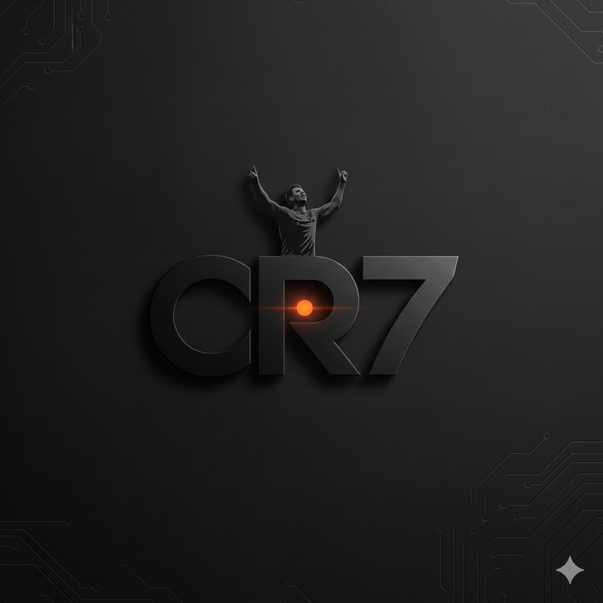

1. Rotación
La Tierra gira sobre su propio eje en aproximadamente 24 horas.
- Genera el ciclo de día y noche.
- Regula el ritmo circadiano de las personas (sueño, hormonas, energía).
- Causa variaciones de temperatura entre el día y la noche.

2. Traslación
Es el movimiento de la Tierra alrededor del Sol, que tarda 365 días y 6 horas.
- Origina el año y define la duración de las estaciones.
- Con la inclinación del eje, produce variaciones climáticas que afectan salud y agricultura.
- Influye en la exposición solar y en nuestro estado de ánimo.
3. Precesión
Es el lento movimiento de bamboleo del eje terrestre, con un ciclo de unos 26,000 años.
- Modifica a largo plazo la posición de las estrellas en el cielo.
- Influye en los cambios climáticos a escalas de miles de años.
- No se nota en la vida diaria, pero afecta la historia evolutiva del clima.
4. Nutación
Son pequeñas oscilaciones del eje terrestre durante el movimiento de precesión.
- Provoca variaciones mínimas en la inclinación del eje.
- Tiene efectos muy leves en el clima a corto plazo.
- Es importante para la astronomía y la navegación espacial precisa.